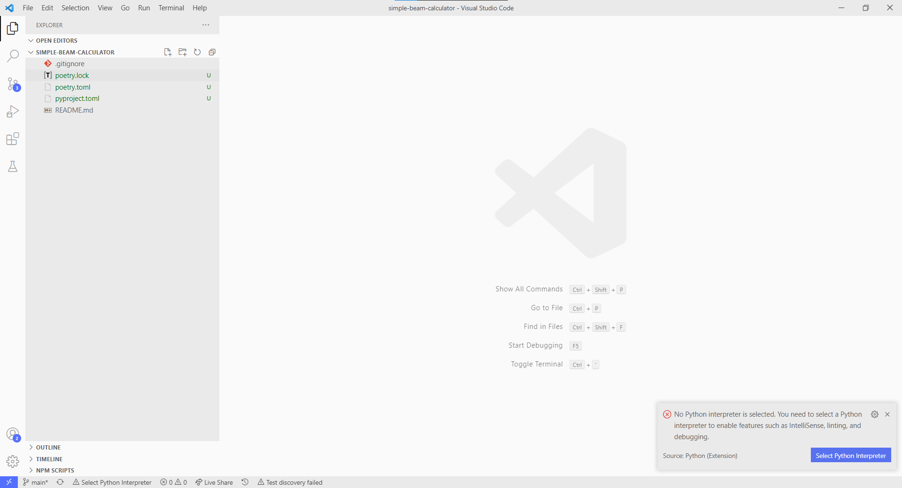
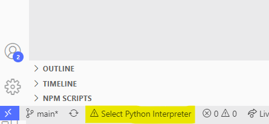
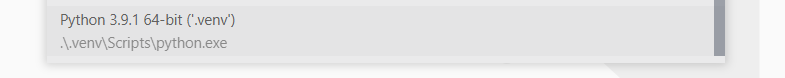

Visual Studio Code
VSCode setup should be quite straightforward! These are a handful of helpful hints and tips.
Opening up a Project from Scratch
From within the project directory you should type the command:
code .
code is the command for VSCode, and the . opens VSCode in the current directory. It should look something like this:

Saving a Workspace
Workspaces save your setting so you can configure VSCode in different ways depending on what you're working on.
Go to:
File->Add Folder to Workspace...and select the current directory.- Then
File->Save Workspace As...and select the current directory.
Setting your Python Interpreter
The first time you open a project in VSCode the Python extension will look around for a Python interpreter. We're going to select the one we created from the poetry install command, which should be local in this current directory under .venv.
Select the option for interpreters at the bottom left of the window.

Then select the local .venv/ interpreter. You might have quite a few here depending on your environment. We want the one for this project only.
